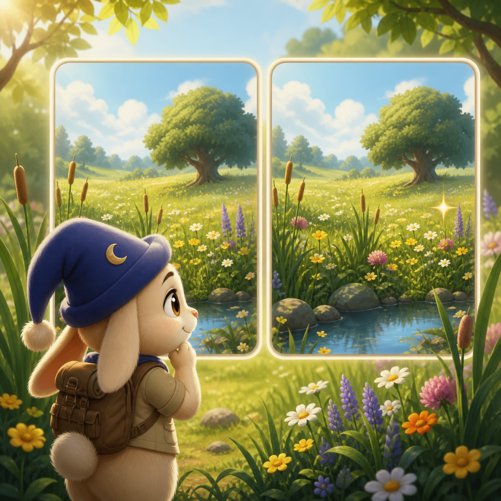

A calm observation game
Meadow Find
Compare two visible meadow panels and find one changed tile.
Three short rounds · no timer · no lives
Three short rounds · no timer · no lives
How to play
Both meadow panels stay visible. Compare row by row, then tap the changed tile on the right. A wrong tap simply invites another look.